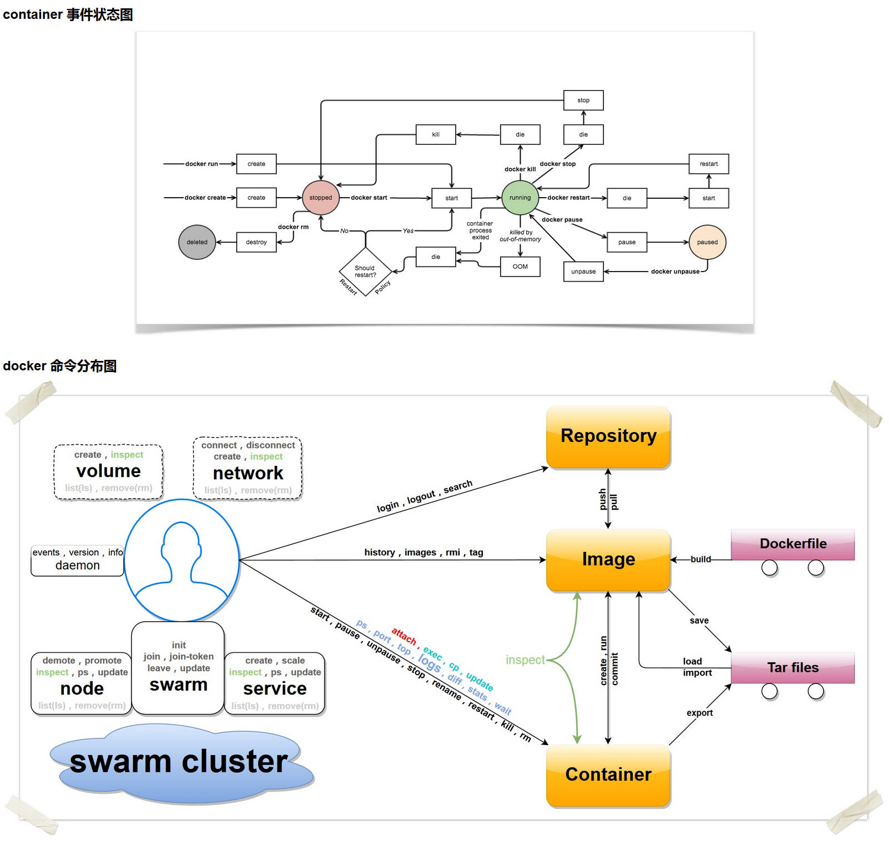

Docker 命令有两大类，客户端命令和服务端命令。前者是主要的操作接口，后者用来启动 Docker Daemon。
客户端命令：基本命令格式为
docker [OPTIONS] COMMAND [arg...]服务端命令：基本命令格式为
dockerd [OPTIONS]可以通过 man docker 或 docker help 来查看这些命令。
接下来的小节对这两个命令进行介绍。
--config=""：指定客户端配置文件，默认为 ~/.docker；
-D=true|false：是否使用 debug 模式。默认不开启；
-H, --host=[]：指定命令对应 Docker 守护进程的监听接口，可以为 unix 套接字 unix:///path/to/socket，文件句柄 fd://socketfd 或 tcp 套接字 tcp://[host[:port]]，默认为 unix:///var/run/docker.sock；
-l, --log-level="debug|info|warn|error|fatal"：指定日志输出级别；
--tls=true|false：是否对 Docker 守护进程启用 TLS 安全机制，默认为否；
--tlscacert=/.docker/ca.pem：TLS CA 签名的可信证书文件路径；
--tlscert=/.docker/cert.pem：TLS 可信证书文件路径；
--tlscert=/.docker/key.pem：TLS 密钥文件路径；
--tlsverify=true|false：启用 TLS 校验，默认为否。
可以通过 docker COMMAND --help 来查看这些命令的具体用法。
attach：依附到一个正在运行的容器中；
build：从一个 Dockerfile 创建一个镜像；
commit：从一个容器的修改中创建一个新的镜像；
cp：在容器和本地宿主系统之间复制文件中；
create：创建一个新容器，但并不运行它；
diff：检查一个容器内文件系统的修改，包括修改和增加；
events：从服务端获取实时的事件；
exec：在运行的容器内执行命令；
export：导出容器内容为一个 tar 包；
history：显示一个镜像的历史信息；
images：列出存在的镜像；
import：导入一个文件（典型为 tar 包）路径或目录来创建一个本地镜像；
info：显示一些相关的系统信息；
inspect：显示一个容器的具体配置信息；
kill：关闭一个运行中的容器 (包括进程和所有相关资源)；
load：从一个 tar 包中加载一个镜像；
login：注册或登录到一个 Docker 的仓库服务器；
logout：从 Docker 的仓库服务器登出；
logs：获取容器的 log 信息；
network：管理 Docker 的网络，包括查看、创建、删除、挂载、卸载等；
node：管理 swarm 集群中的节点，包括查看、更新、删除、提升/取消管理节点等；
pause：暂停一个容器中的所有进程；
port：查找一个 nat 到一个私有网口的公共口；
ps：列出主机上的容器；
pull：从一个Docker的仓库服务器下拉一个镜像或仓库；
push：将一个镜像或者仓库推送到一个 Docker 的注册服务器；
rename：重命名一个容器；
restart：重启一个运行中的容器；
rm：删除给定的若干个容器；
rmi：删除给定的若干个镜像；
run：创建一个新容器，并在其中运行给定命令；
save：保存一个镜像为 tar 包文件；
search：在 Docker index 中搜索一个镜像；
service：管理 Docker 所启动的应用服务，包括创建、更新、删除等；
start：启动一个容器；
stats：输出（一个或多个）容器的资源使用统计信息；
stop：终止一个运行中的容器；
swarm：管理 Docker swarm 集群，包括创建、加入、退出、更新等；
tag：为一个镜像打标签；
top：查看一个容器中的正在运行的进程信息；
unpause：将一个容器内所有的进程从暂停状态中恢复；
update：更新指定的若干容器的配置信息；
version：输出 Docker 的版本信息；
volume：管理 Docker volume，包括查看、创建、删除等；
wait：阻塞直到一个容器终止，然后输出它的退出符。

--api-cors-header=""：CORS 头部域，默认不允许 CORS，要允许任意的跨域访问，可以指定为 "*"；
--authorization-plugin=""：载入认证的插件；
-b=""：将容器挂载到一个已存在的网桥上。指定为 none 时则禁用容器的网络，与 --bip 选项互斥；
--bip=""：让动态创建的 docker0 网桥采用给定的 CIDR 地址; 与 -b 选项互斥；
--cgroup-parent=""：指定 cgroup 的父组，默认 fs cgroup 驱动为 /docker，systemd cgroup 驱动为 system.slice；
--cluster-store=""：构成集群（如 Swarm）时，集群键值数据库服务地址；
--cluster-advertise=""：构成集群时，自身的被访问地址，可以为 host:port 或 interface:port；
--cluster-store-opt=""：构成集群时，键值数据库的配置选项；
--config-file="/etc/docker/daemon.json"：daemon 配置文件路径；
--containerd=""：containerd 文件的路径；
-D, --debug=true|false：是否使用 Debug 模式。缺省为 false；
--default-gateway=""：容器的 IPv4 网关地址，必须在网桥的子网段内；
--default-gateway-v6=""：容器的 IPv6 网关地址；
--default-ulimit=[]：默认的 ulimit 值；
--disable-legacy-registry=true|false：是否允许访问旧版本的镜像仓库服务器；
--dns=""：指定容器使用的 DNS 服务器地址；
--dns-opt=""：DNS 选项；
--dns-search=[]：DNS 搜索域；
--exec-opt=[]：运行时的执行选项；
--exec-root=""：容器执行状态文件的根路径，默认为 /var/run/docker；
--fixed-cidr=""：限定分配 IPv4 地址范围；
--fixed-cidr-v6=""：限定分配 IPv6 地址范围；
-G, --group=""：分配给 unix 套接字的组，默认为 docker；
-g, --graph=""：Docker 运行时的根路径，默认为 /var/lib/docker；
-H, --host=[]：指定命令对应 Docker daemon 的监听接口，可以为 unix 套接字 unix:///path/to/socket，文件句柄 fd://socketfd 或 tcp 套接字 tcp://[host[:port]]，默认为 unix:///var/run/docker.sock；
--icc=true|false：是否启用容器间以及跟 daemon 所在主机的通信。默认为 true。
--insecure-registry=[]：允许访问给定的非安全仓库服务；
--ip=""：绑定容器端口时候的默认 IP 地址。缺省为 0.0.0.0；
--ip-forward=true|false：是否检查启动在 Docker 主机上的启用 IP 转发服务，默认开启。注意关闭该选项将不对系统转发能力进行任何检查修改；
--ip-masq=true|false：是否进行地址伪装，用于容器访问外部网络，默认开启；
--iptables=true|false：是否允许 Docker 添加 iptables 规则。缺省为 true；
--ipv6=true|false：是否启用 IPv6 支持，默认关闭；
-l, --log-level="debug|info|warn|error|fatal"：指定日志输出级别；
--label="[]"：添加指定的键值对标注；
--log-driver="json-file|syslog|journald|gelf|fluentd|awslogs|splunk|etwlogs|gcplogs|none"：指定日志后端驱动，默认为 json-file；
--log-opt=[]：日志后端的选项；
--mtu=VALUE：指定容器网络的 mtu；
-p=""：指定 daemon 的 PID 文件路径。缺省为 /var/run/docker.pid；
--raw-logs：输出原始，未加色彩的日志信息；
--registry-mirror=<scheme>://<host>：指定 docker pull 时使用的注册服务器镜像地址；
-s, --storage-driver=""：指定使用给定的存储后端；
--selinux-enabled=true|false：是否启用 SELinux 支持。缺省值为 false。SELinux 目前尚不支持 overlay 存储驱动；
--storage-opt=[]：驱动后端选项；
--tls=true|false：是否对 Docker daemon 启用 TLS 安全机制，默认为否；
--tlscacert=/.docker/ca.pem：TLS CA 签名的可信证书文件路径；
--tlscert=/.docker/cert.pem：TLS 可信证书文件路径；
--tlscert=/.docker/key.pem：TLS 密钥文件路径；
--tlsverify=true|false：启用 TLS 校验，默认为否；
--userland-proxy=true|false：是否使用用户态代理来实现容器间和出容器的回环通信，默认为 true；
--userns-remap=default|uid:gid|user:group|user|uid：指定容器的用户命名空间，默认是创建新的 UID 和 GID 映射到容器内进程。
[1] 官方文档: https://docs.docker.com/engine/reference/commandline/cli/[2] 官方文档: https://docs.docker.com/engine/reference/commandline/dockerd/